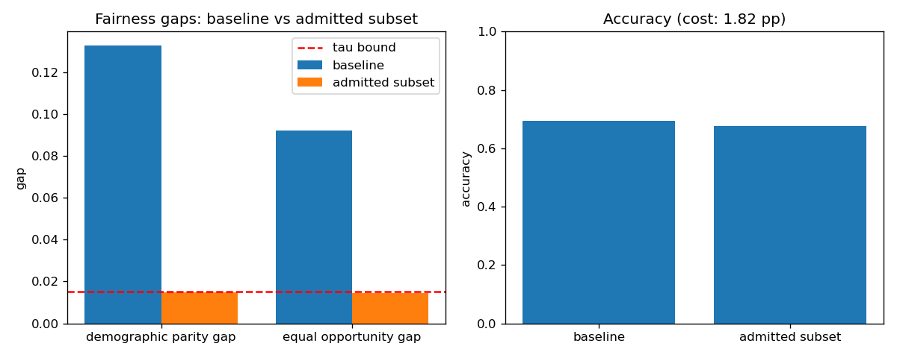

Maximal ethical decision sets under multiple fairness constraints — with a polynomial-time construction
Implements: Coarse Set Theory for Ethical AI: A Mathematical Framework for Multi-Constraint Decision Making with Formal Guarantees
AI systems deployed in lending, hiring, and criminal justice must satisfy several ethical constraints at once — demographic parity, equal opportunity, individual fairness — but existing approaches handle each metric in isolation, with no guarantee the constraints can be satisfied simultaneously.
Coarse Set Theory for Ethical AI: A Mathematical Framework for Multi-Constraint Decision Making with Formal Guarantees (under journal revision, 2026). There is no unified, mathematically complete framework for multi-constraint ethical decision-making: heuristic fairness fixes address one metric at a time, lack formal completeness guarantees, and can fail silently in edge cases or under adversarial pressure.
Coarse Set Theory equips the decision space with a topology capturing ethical proximity between decisions. The implementation follows the paper's greedy construction: repeatedly admit the candidate minimizing total constraint violation, then remove its proximity-neighbors — producing a maximal ethical subset in O(|X|²·n) time, with a decidable membership predicate.
| Metric | Baseline (full set) | Admitted ethical subset |
|---|---|---|
| Demographic-parity gap | 0.1327 | 0.0148 |
| Equal-opportunity gap | 0.0921 | 0.0144 |
| Accuracy | 0.6945 | 0.6763 |
| Decisions kept | 2000 | 1600 (80%) |
Synthetic lending data, n=2000, seed 0. The greedy maximal-subset construction cuts both fairness gaps by ~9× at an accuracy cost of 1.82 percentage points — the paper's reported shape (~0.12 → ~0.01 at ~2pp).

src/ghosh_research/cst/
__init__.py public API
ethics.py constraint predicates, greedy maximal-subset construction
experiments/cst_experiment.py
results/cst/ results.md · charts.pngRun it: python experiments/cst_experiment.py · Quickstart: python examples/01_cst_quickstart.py